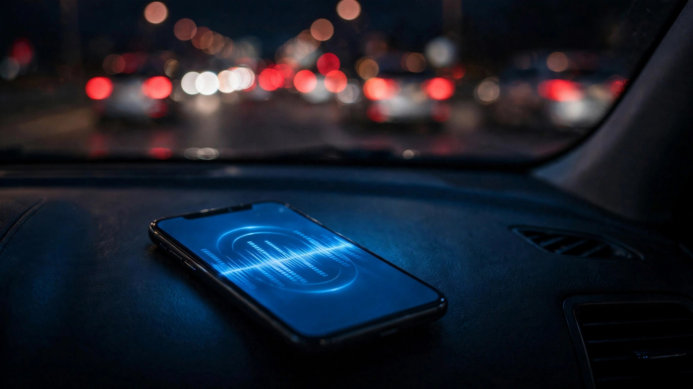

Your Favorite Artist Drops an Album. Fifteen Percent More People Die.

Researchers at the National Bureau of Economic Research wanted to know what happens to American roads when smartphones get interesting, so they built a natural experiment around something that reliably makes millions of people reach for their phones at once: a major album release.[1] Music streaming surges roughly 40% on those days, which is expected, unremarkable, the entire point of dropping an album on a Friday. What was not expected: traffic fatalities surge roughly 15% on those same days.
Not 15% more streaming, not 15% more phone pickups, but fifteen percent more dead Americans on days when the only measurable difference in collective behavior is that a lot of people wanted to hear new music. Published as NBER Working Paper 34866 in February 2026, this study used event study analysis to isolate the effect, controlling for day-of-week patterns, seasonal variation, holidays, and weather conditions that might confound the signal, and none of those controls budged the result.
Because the mechanism isn't really about music at all, despite what the headline suggests. What actually kills is what music does to a phone, and what a phone does to a driver who should be watching the road but is instead swiping through a tracklist, reading a push notification about a new release, or glancing at album art that loaded in the three seconds it takes to cross an intersection at fifty miles per hour. Streaming is overwhelmingly a mobile activity, album drops are an exogenous shock to smartphone engagement, and every spike in that engagement translates to a spike in fatalities because some fraction of those engaged users are operating two-ton machines when they engage.
Now compare that 15% figure to what NHTSA officially counts as cellphone-related death. In 2024, across all 39,254 traffic fatalities in the United States, the agency attributed exactly 437 to cellphone use in fatal crashes.[2] Cellphones were cited in 14% of the 3,208 distraction-affected fatal crashes that year, which themselves constituted only 8% of all fatal crashes.
Those numbers depend entirely on a police officer arriving at a mangled intersection and determining, from physical evidence and witness statements, that someone was looking at a screen in the moments before impact. Officers cannot detect AirPods streaming audio through a dead driver's ears, cannot detect a phone locked in a cupholder that was unlocked three seconds before the collision, cannot detect a driver whose attention drifted because a notification chime triggered a Pavlovian glance that lasted just long enough to miss a red light at a speed that left no time for braking. A 2025 study from the Governors Highway Safety Association and Cambridge Mobile Telematics found that drivers with high cellphone distraction are 240% more likely to crash,[3] yet 87% of surveyed drivers already know texting while driving is extremely dangerous while a third of them do it anyway.[4]
Numbers don't reconcile, and the gap between the NBER's 15% album-day spike and NHTSA's official 437 cellphone deaths tells you exactly where the accounting breaks down. If album release days alone produce a 15% fatality spike driven by smartphone distraction, then the chronic baseline distraction effect across all driving days is far larger than the 437 deaths NHTSA officially attributes to cellphones, because album days are not uniquely distracting in kind, only in intensity. Even a conservative estimate pegging smartphone-related fatality risk at 5% baseline elevation over what it would be in a phoneless world implies roughly 1,960 excess deaths per year that are never coded as "distraction" in FARS, that never appear in any official tally, that exist only as a statistical shadow cast by clever econometrics applied to Spotify data and death certificates. Cellphone's real death toll could be three to five times what any government database reports, and we will never see the direct evidence because it dies with the driver and the phone's screen-on state is not recorded at autopsy.
Fair counterargument: album release days correlate with broader social activity patterns that extend beyond streaming, including more nightlife, more driving, and more alcohol consumption on culturally significant dates. But the NBER researchers specifically controlled for those confounding variables, compared the fatality increase against streaming volume data rather than broader activity proxies, and found the increase tracked with music consumption rather than bar traffic or concert attendance or any other candidate explanation, which puts the signal squarely in the phone.
Adults aged 25 to 34 lead the cellphone fatality statistics, with 27% of drivers in distraction-related fatal crashes in that bracket actively using a phone at the time of the crash.[2] Same demographic most likely to stream music during commutes, use navigation apps for every trip regardless of familiarity with the route, and check notifications compulsively at speeds that transform a two-second glance into a hundred-foot blind drive. They grew up with smartphones fused to their hands, and for them the phone is not an accessory but a prosthetic extension of cognition, which makes it particularly dangerous behind the wheel because FARS has no code for "driver was neurologically tethered to a device that was technically in their pocket."
What This Means for You
Set up your playlist before you shift into drive, use voice commands for any audio control while moving, and let auto-play and queue features do what they were designed to do so your hands and eyes never leave their actual jobs. Album release day or not, every glance at a screen is a coin flip you don't feel yourself making, and the official count says 3,208 people died from distracted driving in 2024 while the NBER data strongly suggests the real number has another digit trying to get in.
Limitations
NBER examines acute spikes on album release days, not chronic daily effects, and extrapolating a 15% acute spike to a baseline smartphone distraction rate involves assumptions about dose-response linearity that the data does not directly support. FARS distraction coding relies on police officer judgment at crash scenes, introducing systematic underreporting bias whose magnitude is itself uncertain. Not all music streaming happens inside moving vehicles, and the causal chain from album release to streaming surge to in-car phone interaction to fatal crash has multiple links where alternative explanations could intervene, each introducing uncertainty that compounds across the chain.
Sources & References
- Oster, E. et al., “Smartphones, Online Music Streaming, and Traffic Fatalities,” NBER Working Paper 34866, February 2026. nber.org
- NHTSA, Distracted Driving 2024 Data, via FCC Consumer Guide, April 2026. fcc.gov
- Governors Highway Safety Association & Cambridge Mobile Telematics, Distracted Driving Report, September 2025.
- AutoInsurance.com, The State of Distracted Driving in 2026. autoinsurance.com
- NHTSA, Fatality Analysis Reporting System (FARS), 2014–2024. nhtsa.gov
Source: NBER Working Paper 34866 (Feb 2026), NHTSA FARS 2024, GHSA/CMT 2025 report. Fifteen-percent figure applies to acute album release day spikes; chronic smartphone distraction effects remain difficult to quantify precisely. See methodology for caveats.